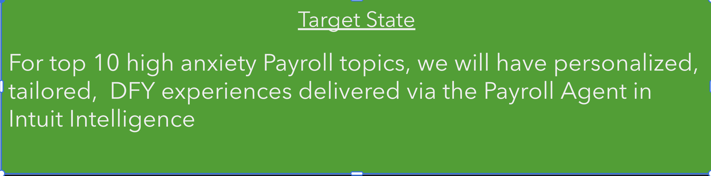
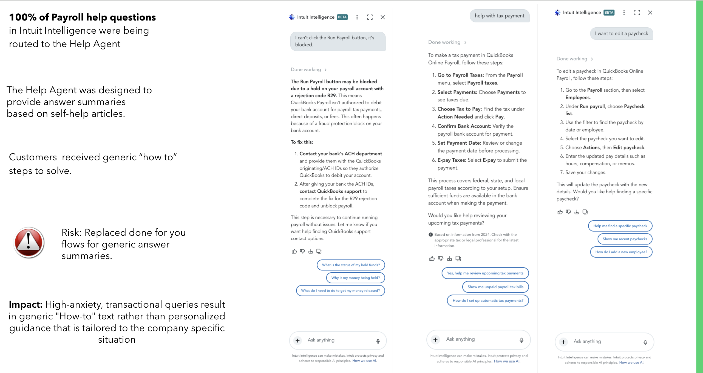
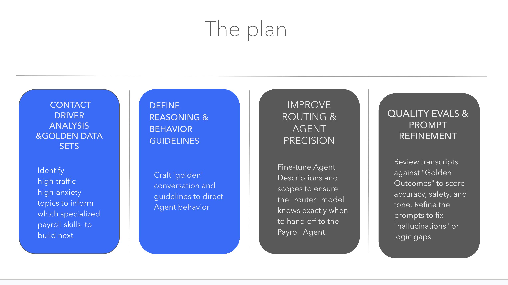

Case No. 03 Payroll Intelligence Agent migration
Keeping payroll help personal while moving 75+ flows into Intuit Intelligence.
Payroll help is high-anxiety, high-complexity work: taxes, filings, setup status, debits, deadlines, compliance, and money movement. As Intuit Intelligence replaced the legacy Digital Assistant, I led the framework that preserved customer-specific payroll guidance and translated it into agent behavior.
- Surface
- QuickBooks Payroll help in Intuit Intelligence
- My role
- Product lead, conversational AI architect, payroll SME, Intuit Intelligence migration lead
- Owned
- Framework, generator, expert validation loop, skill requirements, UAT synthesis
- Evidence
- ~900K annual DA questions, 75+ personalized flows, 21 diagnostic cases, 143 root causes
DA had years of payroll logic embedded in tailored done-for-you flows.
Intuit Intelligence initially answered high-stakes payroll issues like generic help articles.
I defined what the agent must know, retrieve, ask, and hand off.
Generator, expert review, golden data, skill requirements, and UAT closed the gap.
01Overview
This was a migration problem, a quality problem, and a model-behavior problem.
The Digital Assistant received roughly 900K high-complexity payroll help questions annually. Over time, DA and Payroll teams had built more than 75 high-value flows that gave tailored guidance for critical payroll issues.
When Intuit Intelligence became the unified conversational experience, those flows could not be copied over as scripts. They had to become agent behavior: tool calls, routing, diagnostic reasoning, response boundaries, and handoff rules.

02Problem
The early experience flattened payroll diagnosis into generic self-help.
Payroll questions are rarely just “how do I navigate there?” Customers need to know what is true for their company: which tax groups are ready, which forms are missing, whether a payment was sent, why money was debited, or what action is blocked.
Early Intuit Intelligence behavior often routed payroll questions to the Help Agent. That agent summarized content, but it did not reliably inspect the customer’s setup, payment status, employee locations, or jurisdiction-specific requirements before answering.


The answer gave broad payroll tax setup guidance without reading the customer’s current setup status. The customer still had to inspect payroll settings and infer what applied to their company.
03Research
I reframed the work around what the agent must know before it speaks.
I worked with Payroll product design teams, PMs, and experts to extract the diagnostic logic behind legacy DA flows. The research artifact was not a persona deck or a transcript summary. It was a practical framework for agent behavior.
For each high-anxiety topic, the framework defined the customer problem, required account facts, tool dependencies, expected reasoning path, stop conditions, and human handoff triggers.
04Generator
I built the generator so expert judgment could scale.
The payroll framework needed expert validation, but asking experts to author every case from scratch would have slowed the migration. I built the generator as a prompt-driven production aid: it turned diagnostic topics into structured, spreadsheet-ready golden-dataset drafts that experts could correct.
The generator did not replace judgment. It made judgment reviewable. Each draft had to declare the customer ask, the account facts the agent needed, the tool path, the likely root cause, the ideal answer shape, and the handoff boundary.
High-anxiety payroll topics, legacy DA flow logic, contact-driver research, and Payroll PD input.
I prompted the model to produce consistent fields instead of prose: facts to retrieve, root causes, tool path, expected behavior, and escalation rule.
Payroll experts validated the generated rows, corrected domain gaps, and turned drafts into ground truth.
I need to set up payroll taxes.
Federal and state setup status, e-service enrollment, missing forms, tax IDs, and employee work locations.
Name the incomplete jurisdictions before giving navigation. Do not answer from help content alone.
Remove stale disclaimer, add exact product path, and explain what is blocking automatic payments.
Source material from existing personalized payroll support and high-anxiety topic analysis.
Diagnostic cases, root causes, required data, handoff triggers, and expected response patterns.
Experts review generated logic and fill the gaps the model cannot know by itself.
PD, PM, and engineering get concrete requirements instead of vague intent.
05Skill behavior
The dataset became the bridge from product decision to model behavior.
The strongest artifact was the translation layer: what product teams wanted the experience to do, expressed as behavior the agent could follow. The payroll tax setup and payments skills needed to know when to retrieve setup context, when to inspect all active jurisdictions, when to call adjacent skills, and when a generic answer was not acceptable.
Load setup context before answering setup, tax group, e-service, exemption, state-account, or authorization questions.
Determine active federal, state, and local groups before explaining what is owed, paid, blocked, or pending.
Load the setup skill when a payment answer depends on setup status; load payments when setup questions involve money movement.
Do not answer from memory when tool data can provide the actual customer state.
Ask only when the answer lives outside available tools, customer data, and conversation context.
06Execution
My work sat across strategy, build input, and delivery quality.
I did not hand the team a concept and leave. I created the framework, built the generator, shaped the validation process, translated findings into skill requirements, and drove UAT feedback back to engineering.

Migration framing, diagnostic strategy, generator design, ask boundaries, behavior requirements, and UAT synthesis.
Payroll PD and PM teams on prioritization, expert review, skill requirements, and engineering follow-through.
Domain-specific review once the generator, validation rubric, and structured dataset were ready for expert correction.
07UAT
UAT turned the framework into concrete fixes.
I drove UAT to check whether the skill actually behaved like the framework, not just whether the response sounded polished. I looked for evidence that the agent used the right data, called the right adjacent skill, avoided stale disclaimers, interpreted tables instead of restating them, and gave a specific next step.
The raw sheet included internal reviewer fields. This public version preserves the feedback pattern while removing people, account details, trace links, and private identifiers.
08Outcome
The payroll agent moved from article retrieval toward account-aware diagnosis.
The work helped preserve the quality of the legacy payroll support experience inside a new agentic surface. Instead of sending customers to inspect settings on their own, the agent could read setup state, identify missing authorizations, explain jurisdiction-specific gaps, and hand off with context when expert help was the right next step.

The improved response starts from the customer’s actual setup state, names the federal and state actions required, and gives a specific next step instead of a generic article summary.
09What changed in my practice
Agent design is where product judgment becomes executable behavior.
Payroll made the core agentic design problem concrete. Product teams had already made important decisions about what should be solved with data, what should be explained, what should be handed to a person, and what should never be guessed. My work was turning those decisions into behavior the model could reliably perform.
The operating system was repeatable: define the job, generate structured diagnostic ground truth, validate with humans, translate into skill rules, test, and refine.
NextCase No. 04
The Quality Program: the generator pattern, human review loop, and eval systems behind trustworthy agent behavior.